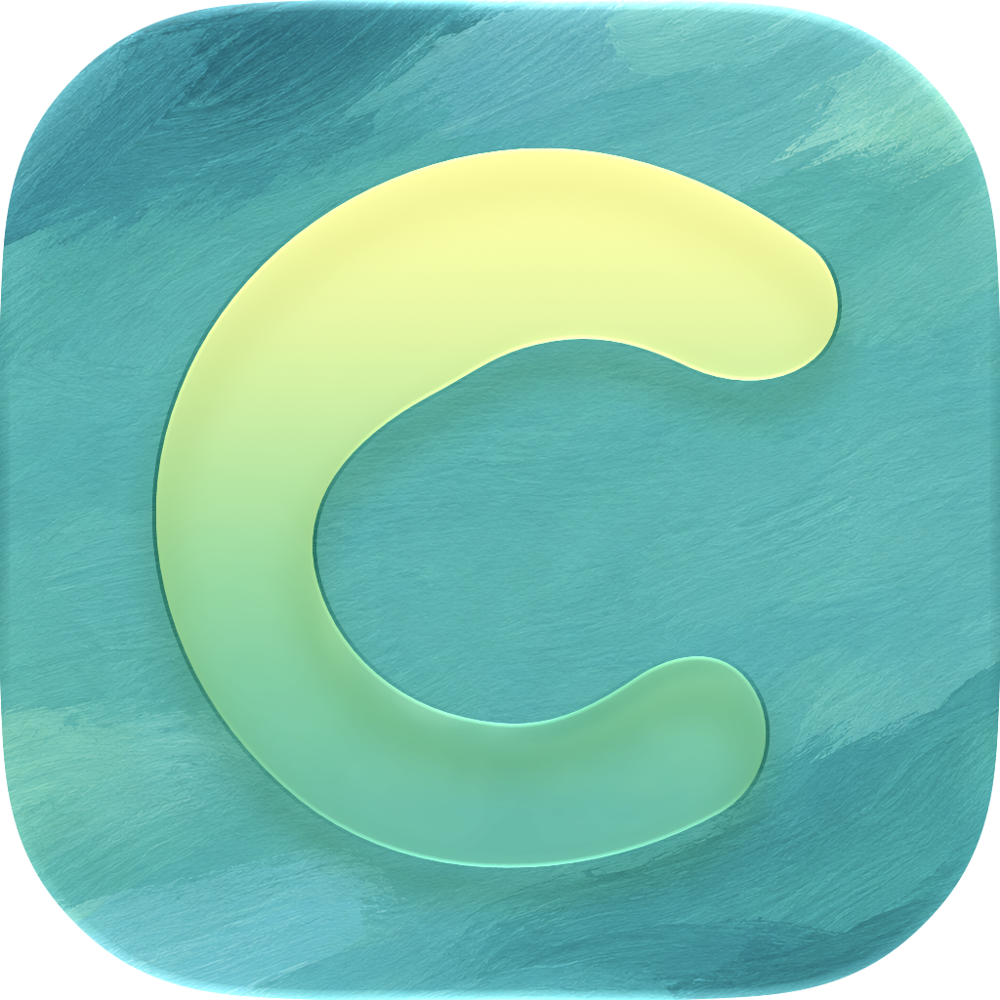
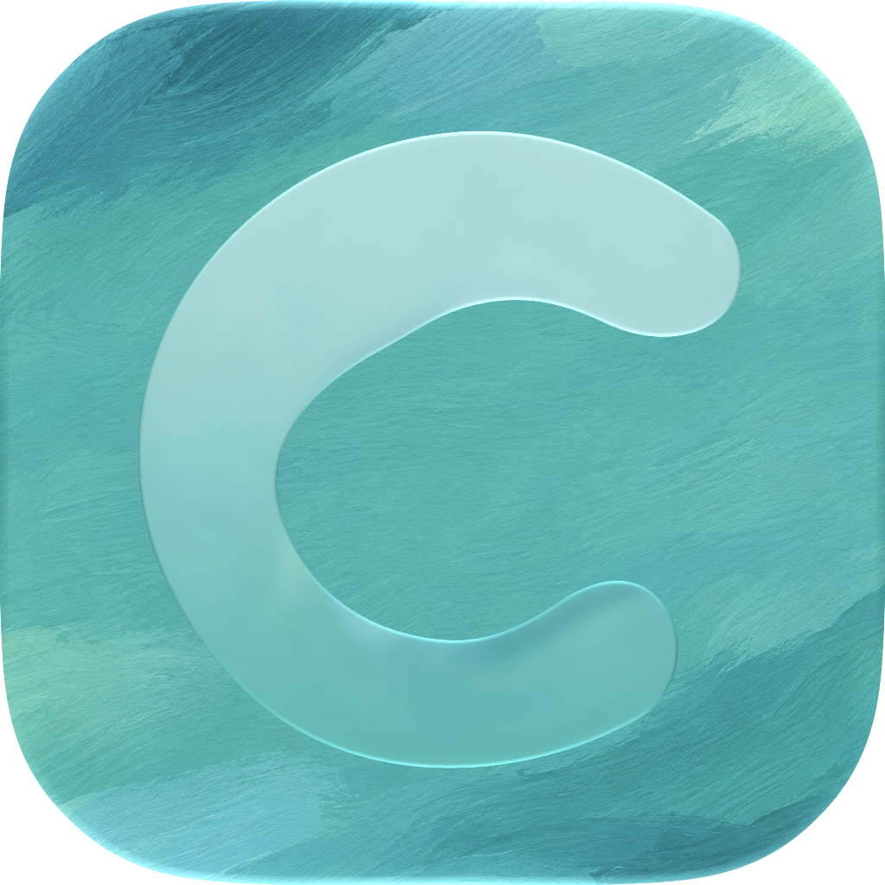
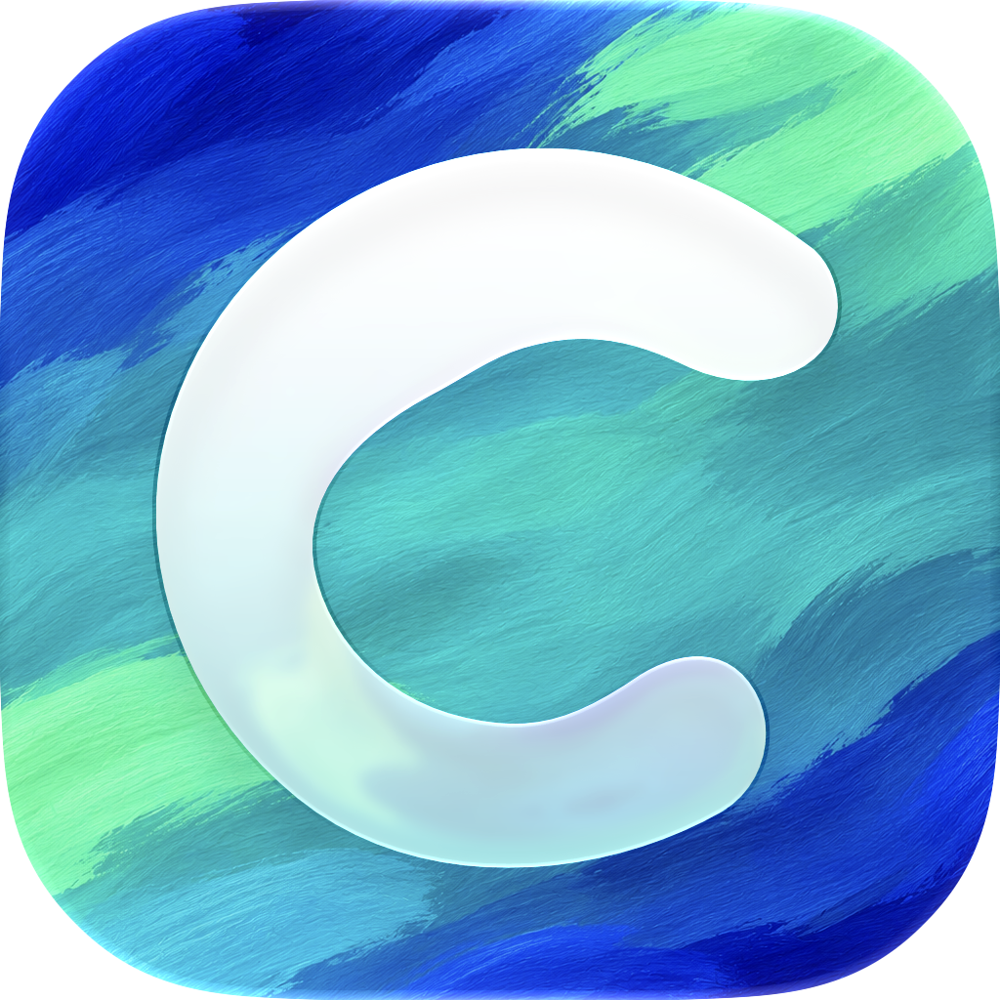
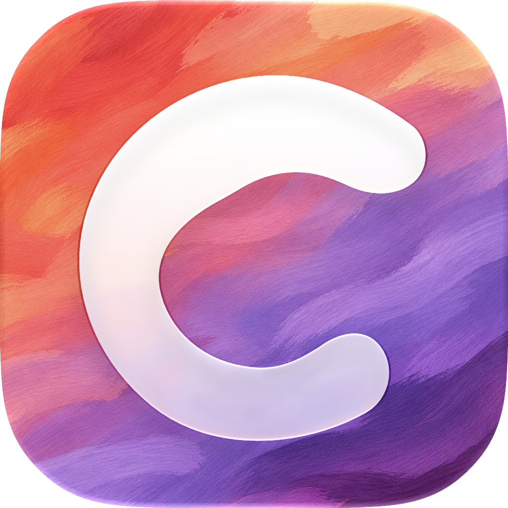
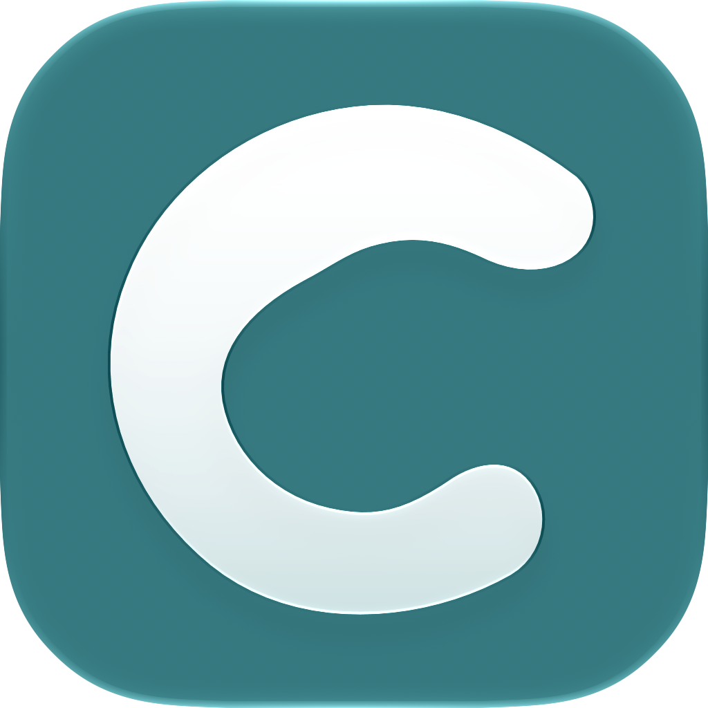

Sea Glass
Selected app icon, with slightly stronger paint strokes throughout.
The selected Cove app icon. Soft paint strokes now cross the center as well as the edges, with your glass settings.
Selected app icon, with slightly stronger paint strokes throughout.

Your yellow-to-lime C. Saved exactly as you made it.

An exact copy from before your edit.

Your glass settings, with more paint color showing through.


Brighter white. Less translucent, with your refraction and shadows.

Your glass settings, with more paint color showing through.


Brighter white. Less translucent, with your refraction and shadows.

Stronger mint-to-blue gradient, with your new glass settings.


Earlier solid teal study.

Earlier installed icon.

Earlier paint study with the white C.